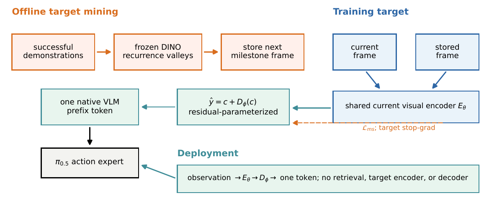
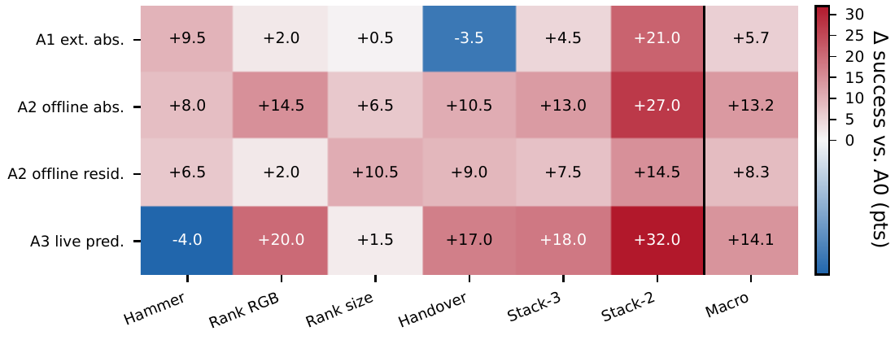

+0.0655
Held-out predictor 相对 persistence 的 latent cosine 提升，证明 future signal 非空。
Research investment brief
让 VLA 以可验证的方式使用未来状态信息
最新结果证明预测器学到了非平凡未来表征，但正确内容、增强检索和 privileged 4×4 空间目标均未转化为控制收益。 项目现阶段不再扩大 predictor，而是以 corrected π0.5 三种子矩阵判断现有集成是否产生稳定策略收益，并将失败接口作为可复现的诊断边界。
01 · Executive summary
项目已证明预测器能从当前观测中恢复非平凡的未来表征，但现有单-token 接口和 4×4 privileged 空间接口均未把未来表示转化为动作收益。当前主问题已经收敛为：在有效的 π0.5 基线上，现有集成是否仍能产生可复现的策略收益；如果能够，该收益来自表征塑形还是未来内容。
02 · Opportunity
低成本本身不构成研究价值，前提是未来信息能降低动作不确定性。当前证据把问题收敛为三个可验证缺口，而不是继续假设“预测越准，控制自然越好”。
两折 held-out 结果中，预测 cosine 为 0.8134，persistence 为 0.7479；stacking 的 lift 最高，hammer 最低。
正确 hint、内容替换和 demo-retrieval 均未产生显著控制优势；4×4 privileged patch 也未超过 no-goal，并在 Hammer 上显著增加动作端点误差。
Future-off 继承 LaWAM 预训练，不能当作纯 VLA；同时所有 active downstream WM arms 都低于它。
03 · Proposed system
方法将“未来监督是否可预测”“策略是否使用正确内容”和“集成本身是否改变策略”分开检验。单-token 与 privileged spatial prototype 现均作为诊断接口保留；在 corrected matched utility 产生正结果前，不再扩展 predictor。
从成功轨迹中寻找跨 episode 重复出现的阶段状态，不需要人工阶段边界。
当前帧与 milestone image 由同一 VLA 编码器映射，区分编码空间一致性与内容效用。
用 correct、zero、cross-task 和 within-task 条件检验策略是否真正依赖未来内容。
在相同初始化、数据、场景和评测器下比较 A0、A2-Abs 与 A3，并报告跨训练种子不确定性。

04 · Differentiation
05 · Current evidence
证据按强度分成 evaluator calibration、legacy pilot、fixed-checkpoint intervention、配对效率和 LaWAM 多训练种子诊断，避免将探索性增益包装成最终结果。
| 方法 | Hammer | Rank RGB | Rank size | Handover | Stack-3 | Stack-2 | Macro |
|---|---|---|---|---|---|---|---|
| A0 · no hint | 70.0 | 50.5 | 24.0 | 9.0 | 17.5 | 42.0 | 35.50 |
| A2 · offline absolute | 78.0 | 65.0 | 30.5 | 19.5 | 30.5 | 69.0 | 48.75 |
| MINT-VLA · current encoder | 66.0 | 70.5 | 25.5 | 26.0 | 35.5 | 74.0 | 49.58 |

| 架构 | Correct | Current | Zero | Feature-permuted | Cross-task | Instance-shuffle |
|---|---|---|---|---|---|---|
| A2 | 70.46 | 70.27 | 66.80 | 72.20 | 71.04 | 69.88 |
| A3 · MINT-VLA | 71.24 | 72.97 | 72.97 | 72.97 | 72.20 | 74.13 |
| 诊断 | 规模 | 主要结果 | 能够排除什么 |
|---|---|---|---|
| Held-out predictor | 2 folds · 480 episodes | cosine 0.8134 vs persistence 0.7479；lift +0.0655 | 排除“predictor 没学到 future signal” |
| Milestone retrieval | Top-1 / Top-5 | 46.9% / 80.8%；stacking lift 最高 | 证明表征包含阶段辨识信息 |
| State-dependent demo retrieval | 1,161 paired episodes | 89.58% vs 89.23%；+0.34 pp，p=0.738 | 更强内容仍不能修复当前控制接口 |
| 实验 | 设计与样本量 | 主要效果 | 证据边界 |
|---|---|---|---|
| 六任务 hint diagnosis | 3 方法 × 3 控制；每组 1,200 paired episodes | Correct pooled 胜出 0/9；全部 Holm-adjusted p=1 | 否定当前单-token future-content utility |
| Handover adverse case | Combo correct vs same-task foreign instance；n=200 | 72.5% vs 82.5%；−10.0 pp，Holm p=0.0337 | 正确内容在一个任务中产生可测负作用 |
| Privileged spatial probe | 1,000 updates；2 tasks；40 held-out episodes/task | Hammer endpoint L2 +0.0725 vs no-goal，95% CI [+0.0391,+0.1110] | 离线动作误差，越低越好；不是闭环成功率 |
| 方法 | Future 接口 | 正向证据 | 对本项目的启示 |
|---|---|---|---|
| LaWAM | DINO spatial future map + Alternate-DiT | RoboTwin clean/random 92.64/89.80；相对论文 π0.5 为 +9.90/+13.04 pp | 动作导向 latent、空间 patch 与深层 action conditioning 共同重要；跨架构比较不能单独归因于 WM |
| π0.7 | 生成 subgoal image 作为原生视觉 prompt | 复杂指代、反数据偏置和部分长程任务明显提升；简单任务可持平或回退 | 训练时混合生成目标、保留视觉结构、按 subtask 在线刷新 |
| AHEAD | 预测 future patches 替换 frozen VLA patches | 动态拦截场景 79–97%，最强基线 31–58% | 未来信息在存在真实时延缺口的任务上最具动作判别力 |
| 指标 | A0 | A2 | A3 · MINT-VLA | A3 相对 A0 |
|---|---|---|---|---|
| Core model mean | 57.19 ms | 58.35 ms | 57.99 ms | +0.80 ms |
| WebSocket round-trip | 107.20 ms | 108.91 ms | 107.01 ms | -0.18 ms |
| Action-server throughput | 9.33 req/s | 9.18 req/s | 9.34 req/s | +0.17% |
| Training peak memory | 67,247 MiB | 67,247 MiB | 67,265 MiB | +18 MiB |
| 配置 | 训练种子 | Macro 均值 | 相对 local-WM | 相对 Future-off |
|---|---|---|---|---|
| LaWAM-init / Future-off | 3 | 90.83 | +4.17 pp | -- |
| Absolute milestone | 2 | 89.21 | +2.54 pp | -1.63 pp |
| Residual + isolation | 3 | 88.78 | +2.11 pp | -2.06 pp |
| Residual milestone | 2 | 87.50 | +0.83 pp | -3.33 pp |
| Local-WM | 2 | 86.67 | -- | -4.17 pp |
| Gradient isolation | 2 | 89.04 | +2.37 pp | -1.79 pp |
06 · Remaining uncertainty
项目已经排除若干基础风险，剩余问题可以通过有限、预先定义的实验得到答案。
07 · Gated execution
每一阶段都要求上一阶段给出正向或可解释结果，避免在核心假设失败后继续扩大算力投入。
| 阶段 | 核心问题 | 通过条件 | 未通过时 |
|---|---|---|---|
| Gate 0 | Baseline 是否有效 | Corrected A0 macro ≥70%，provenance 审计通过 | Running |
| Gate 1 | MINT-VLA 是否提高控制成功率 | Matched A0 / A2 / MINT 跨训练 seed 正向 | Training · acceptance waits G0 |
| Gate 2A | 单-token future 内容是否被使用 | Correct 优于关键内容替换条件 | Closed · null |
| Gate 2B | 空间 future condition 是否可用 | Privileged spatial tokens 优于 no-goal/current-goal | Closed · adverse |
| Gate 3 | 预测接口与任务范围是否可复现 | Predicted condition 保留 oracle 收益，并在预注册任务组复现 | Stopped by G2B |
| Gate 4 | 是否适用于第二种 VLA | 第二 VLA 内部 matched baseline 对比为正 | Planned |
仅展示尚未完成且可能改变论文结论的任务。已完成证据已迁移到技术附件；LaWAM 支持性作业的瞬时状态由 scheduler snapshot 维护。
08 · Research return
单-token 内容路径和 privileged spatial gate 均已关闭，因此“VLA–WM 集成诊断”是当前证据直接支持的出口。只有 corrected A3 在三种子 matched comparison 中稳定超过 A0，论文才增加低成本集成方法主张。
Corrected matched utility 跨训练 seed 成立时，形成成本边界清晰的 VLA 条件接口；不扩张为 future-content claim。
仅当 corrected task cells 和跨种子区间支持时，才能将收益限定到明确的多阶段任务。
未来表征可预测但两类接口均无内容效用，形成 VLA–WM 接入、动作充分性与因果评测研究。
Corrected baseline 消除增益时，保留高质量负结果、评测协议和自动化工具链。
09 · Risk management
| 风险 | 当前信号 | 控制方式 | 状态 |
|---|---|---|---|
| 弱 baseline 制造虚假提升 | 公开 π0.5 明显高于 pilot A0 | Corrected public-recipe baseline gate | Running |
| 单-token package 有用但内容无用 | 九组严格 pooled 内容比较均无正结果 | 冻结旧接口的 future-content claim | Confirmed |
| 空间压缩掩盖真实效用 | 4×4 privileged probe 未超过 no-goal，Hammer 明确恶化 | 关闭 predicted spatial expansion；重新定义动作充分目标后才可重启 | Closed |
| 收益仅存在于少数任务 | Pilot task effect 异质 | 预注册 block/bowl stacking 与控制任务 | Planned |
| Auxiliary loss 干扰 encoder | 相关 VLA 工作依赖 mask/gating | Aux-only、prefix-only、detached-current | Planned |
| 只适用于 π0.5 | 当前只有 prefix 实例 | 第二 VLA 内部 matched comparison | Planned |
| 实际运行成本无优势 | A3 延迟、吞吐与训练显存接近 A0；A2 显存等于 A0 | 三臂配对协议已完成 | Complete |
10 · Recommendation
Technical appendix
| 工作 | 本项目使用的证据 | 链接 |
|---|---|---|
| WorldArena | 预测感知质量与 action planning 仅弱相关，存在 perception–functionality gap。 | arXiv |
| LaWAM | 动作导向 latent、spatial future map、Alternate-DiT 与 Knowledge Insulation 的组合证据。 | arXiv |
| π0.7 | Generated subgoal image 作为原生视觉 prompt，在复杂指代、反数据偏置和跨 embodiment 场景提供选择性收益。 | arXiv |
| AHEAD | 在动态拦截场景中以 future patches 补偿控制时延，说明未来表征在高信息增量场景可转化为动作收益。 | arXiv |
| DreamVLA | 图像预测冗余和多类 world knowledge 训练干扰。 | arXiv |
| FutureVLA | 任务无关视觉细节、visuomotor gating 与 latent alignment。 | arXiv |
| Knowledge Insulation | 朴素新增模块可能损害 VLA 训练与知识迁移。 | arXiv |